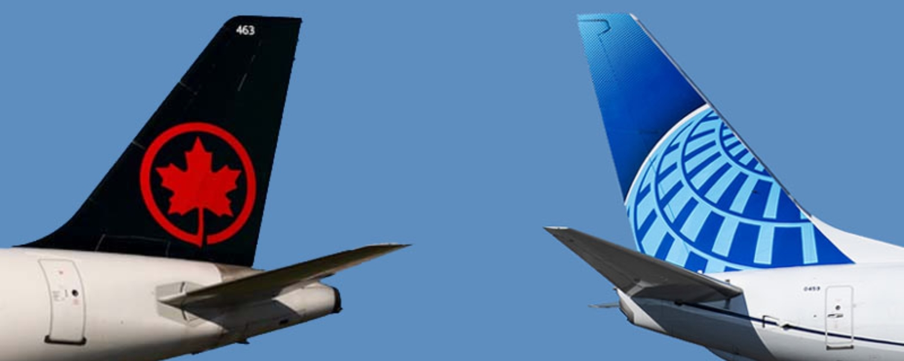

October 20, 2026
Airline NewsNew Routes Announced: Air Canada, United, Discover Airlines and Flair Add Flights for 2027
October has brought a busy run of route announcements from carriers serving Canada, and together they give travellers a lot to plan around for 2027.
Over the past couple of weeks, Air Canada and United Airlines have outlined a fresh slate of transborder routes, Air Canada has added a southern Spanish city to its European map, Discover Airlines has set its sights on a second Alberta city, and Flair has connected two Canadian cities that have never had a nonstop link before.
Here is a look at what is coming, where each route flies, and when it starts.
Air Canada and United Expand Their Transborder Network

Source: aviacionaldia.
Air Canada and United Airlines announced a group of new Canada to U.S. routes for summer 2027, built on the Transborder Joint Business Agreement the two carriers have run together since 2022.
Air Canada is adding three new destinations, and each one is worth a second look. Toronto picks up a nonstop to Louisville, the heart of Kentucky bourbon country and home of the Kentucky Derby. Montreal gains a direct link to Indianapolis, a surprisingly walkable Midwestern city best known for the Indy 500 and a lively downtown canal district. And Edmonton gets a nonstop to Newark, which puts the whole New York City area within easy reach and opens up connections across United's global hub. Air Canada is also upgauging its Edmonton to San Francisco route to the larger Airbus A220, which adds capacity rather than a new city.
| Flight | Route | Departs | Arrives | Frequency | Season |
|---|---|---|---|---|---|
| AC8561 | Toronto to Louisville | 14:00 | 15:35 | Up to daily | Apr 28 to Oct 31, 2027 |
| AC8562 | Louisville to Toronto | 16:10 | 17:37 | Up to daily | Apr 28 to Oct 31, 2027 |
| AC8563 | Montreal to Indianapolis | 17:00 | 19:31 | Daily | Jun 1 to Sep 30, 2027 |
| AC8564 | Indianapolis to Montreal | 14:00 | 16:10 | Daily | Jun 1 to Sep 30, 2027 |
| AC1562 | Edmonton to Newark | 06:00 | 12:23 | 4x weekly | Jun 1 to Oct 17, 2027 |
| AC1563 | Newark to Edmonton | 13:20 | 16:33 | 4x weekly | Jun 1 to Oct 17, 2027 |
Quebec City is the standout on the United side, picking up three improvements at once: a new nonstop to Denver next summer, new year round service to Chicago starting this winter, and up to five weekly flights to Washington Dulles next summer. Elsewhere, United is launching seasonal service between Newark and St. John's, reconnecting the two cities for the first time in more than a decade, adding a new nonstop from Denver to Ottawa, and boosting seats between Denver and Winnipeg by 65 per cent. Denver is a useful one to note, since it is a major United hub and a natural gateway to Colorado's mountains and ski country.
| Route | Change | Notes |
|---|---|---|
| Quebec City to Denver | New service, summer 2027 | Denver is a major United hub |
| Quebec City to Chicago | New year-round service, from winter 2026 | Chicago O'Hare, a United hub |
| Quebec City to Washington Dulles | Up to 5 flights weekly, summer 2027 | More service to the D.C. area |
| St. John's to Newark | New seasonal service | First nonstop link in more than a decade |
| Ottawa to Denver | New service | Denver becomes United's fourth destination from Ottawa |
| Winnipeg to Denver | 65 per cent more seats | Added capacity on an existing route |
United has not released flight numbers or exact times for these additions yet. The two airlines have also agreed to renew and expand the Transborder Joint Business Agreement, which remains subject to regulatory approval in Canada. For travellers, the practical appeal of the partnership is the single ticket and coordinated schedules across both networks, which can make connecting itineraries between Canadian cities and U.S. destinations easier to book and, in many cases, more affordable than buying each segment on its own.
It is exciting to see Edmonton get a link to New York City by way of Newark, since the city does not currently have a direct flight to the New York area. It makes me hope Winnipeg will land this route one day too! Also, the return of St. John's to Newark is a welcome one, and a nice win for travellers on the other side of the country.
Air Canada Launches the Only Nonstop Between North America and Seville
Air Canada is adding Seville to its European network, and this one stands out because it will be the first and only nonstop service between North America and the Andalusian city. The route begins September 8, 2027 from Montreal, operating three times a week to start and increasing to four times a week on October 1, 2027. It is a seasonal route, and flights are already on sale.
Seville becomes Air Canada's fifth destination in Spain, and the airline will operate it with the Airbus A321XLR, its newest long range single aisle aircraft, configured with 14 lie flat Signature Class seats and 168 Economy seats. Because the route connects through Air Canada's Montreal hub, travellers across the rest of the country have a path to southern Spain without changing planes in another European city first.
| Flight | Route | Departs | Arrives | Frequency | Season |
|---|---|---|---|---|---|
| AC958 | Montreal (YUL) to Seville (SVQ) | 20:30 | 09:30 +1 | Up to 4x weekly | Sep 8, 2027 to Jan 8, 2028; Feb 18 to Jun 3, 2028 |
| AC959 | Seville (SVQ) to Montreal (YUL) | 12:45 | 14:40 | Up to 4x weekly | Sep 9, 2027 to Jan 9, 2028; Feb 19 to Jun 4, 2028 |
It has been interesting to watch Air Canada roll out new long haul routes on its narrow body A321XLR. Over the past couple of months, the airline has also announced Toronto to Oslo, Norway, Toronto to Shannon, Ireland, and Montreal to Basel, Switzerland, all flown on the XLR. It shows that the aircraft lets Air Canada reach smaller and medium sized cities effectively, filling seats on routes that might not support a larger Airbus A330, or Boeing 787/777.
Discover Airlines Connects Edmonton and Frankfurt
Discover Airlines, the leisure carrier within the Lufthansa Group, is launching nonstop service between Edmonton and Frankfurt starting June 1, 2027. The route will operate three times a week, on Tuesdays, Thursdays and Saturdays, and it makes Discover the only airline flying nonstop between Edmonton and Germany.
| Route | Days | Frequency | Starts |
|---|---|---|---|
| Edmonton (YEG) to Frankfurt | Tue, Thu, Sat | 3x weekly | June 1, 2027 |
Flight numbers and exact times have not been released yet.
Worth noting is that Discover Airlines already serves Calgary, so this is an interesting development for travellers in Edmonton who would rather not connect through Calgary to reach Europe on the carrier.
For Edmonton, the bigger picture is notable too. The Frankfurt route gives the city its second nonstop link to Europe, alongside KLM's existing service to Amsterdam, which has been Edmonton's transatlantic connection. Edmonton works well as a gateway to the Canadian Rockies, and the route opens up open jaw trips where you fly into Edmonton and home out of Calgary, or the reverse.
Flair Links Edmonton and Saint John for the First Time
Flair is adding the first ever nonstop service between Edmonton and Saint John, New Brunswick, with flights beginning June 15, 2027. The route will operate twice a week, and introductory one way fares start at $199 CAD for a limited time in both directions. Booking opened October 15, 2026 at flyflair.com.
| Route | Frequency | Starts | Introductory fare |
|---|---|---|---|
| Edmonton (YEG) to Saint John (YSJ) | Twice weekly | June 15, 2027 | From $199 CAD one way |
Exact times and flight numbers are still to be confirmed. Saint John is one of Edmonton's larger Atlantic Canadian markets, and until now most of that traffic has connected through Toronto.
A nonstop removes that extra stop and gives travellers in Alberta and New Brunswick a more direct way to visit family, travel for work, or explore the other side of the country. For anyone heading east, Saint John sits close to the Bay of Fundy and the coastal communities of southern New Brunswick.
My Thoughts
If there is a thread running through all of this, it is Edmonton. In the span of a few weeks, the city picked up a new transborder route to Newark, a new transatlantic route to Frankfurt, and a new domestic route to Saint John. That is a strong showing for a single airport, and it points to real momentum for travellers flying out of Alberta.
The Seville route is the one I am most interested in on the leisure side. Andalusia has been a tough region to reach nonstop from Canada, and having a single flight from Montreal into the heart of southern Spain is a meaningful addition, especially in the shoulder seasons when the weather is milder and the crowds are thinner.
On the transborder front, the Air Canada and United expansion is less about any one headline city and more about filling in the map, with mid sized U.S. destinations like Louisville and Indianapolis becoming reachable without a connection. It will be interesting to see how these routes perform given the current state of Canada and United States relations. Denver, for example, is a major U.S. hub with plenty of onward demand, while Louisville and Indianapolis are smaller point to point markets, so the way travellers respond to each could look quite different.
A few of these still have boxes to check, the Joint Business Agreement renewal chief among them, and the international and transborder routes are seasonal rather than year round. Still, taken together, 2027 is shaping up to offer Canadians a wider set of nonstop options than they have had in a while.
The Bottom Line
October brought a wave of route news for 2027, spanning domestic, transborder and international flying.
Air Canada and United are expanding their Canada to U.S. network for summer 2027, Air Canada is adding the only nonstop between North America and Seville from Montreal, Discover Airlines is giving Edmonton a second European link with Frankfurt, and Flair is connecting Edmonton and Saint John nonstop for the first time.
Some of these are already bookable, a few depend on regulatory approval, and most arrive next summer, so there is time to watch fares and plan ahead.
Happy travels!